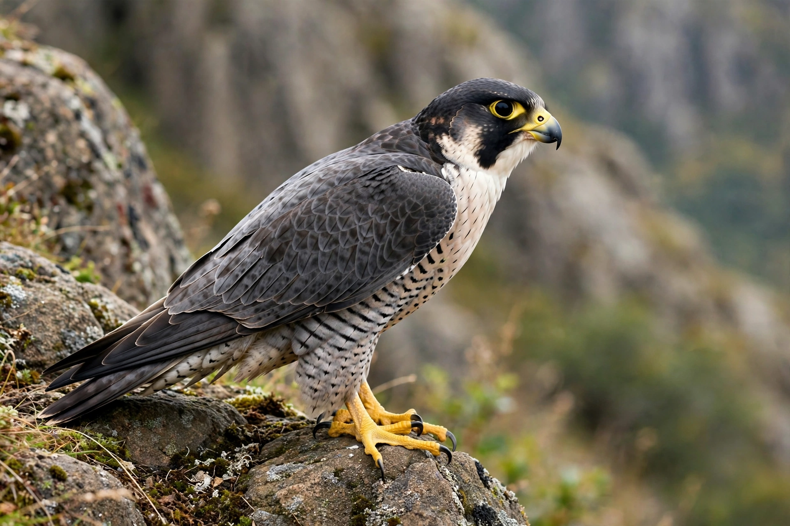

Falcon

Falcons are birds of prey of the genus Falco (family Falconidae), about 40 species of swift, agile hunters with pointed wings and notched bills. The peregrine falcon, stooping at over 320 km/h, is the fastest animal on Earth.
Biology
Falcons kill with a tomial-tooth bite to the neck rather than with talons alone. Unlike hawks, they are now known to be closer relatives of parrots and songbirds than of other raptors. Peregrines nest on cliffs and, famously, on city skyscrapers, feeding mostly on other birds caught in flight.
Conservation story
Peregrines crashed mid-20th century because the pesticide DDT thinned their eggshells; after bans and captive-breeding reintroductions they recovered spectacularly and were removed from the US endangered list in 1999 — a landmark of Conservation biology. Kestrels hover-hunt rodents over grassland such as the Savanna.